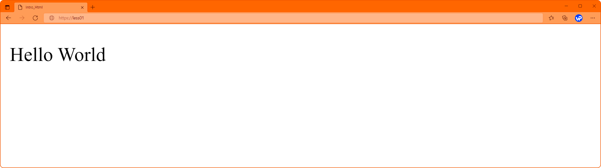

Знайомимось із мовою HTML
HTML (Hyper Text Markup Language – мова гіпертекстової розмітки) – це стандартизована мова розмітки документів для перегляду веб-сторінок у браузері.
Мова HTML була розроблена британським ученим Тімом Бернерсом-Лі на початку 1990-х років. Вона створювалася як можливість обміну науковою та технічною документацією, і така що не потребує від людини спеціальних навичок програмування.
HTML-документ – це звичайний текстовий документ, він може бути створений як у звичайному текстовому редакторі (Блокнот), так і у спеціалізованому із підсвічуванням коду (Notepad++, Visual Studio Code, тощо). HTML-документ має розширення – .html.
Сьогодні майже усі веб-сторінки написані на мові HTML, і це найліпший спосіб створити базову структуру веб-сторінки.
Тег.
Тепер ми знаємо, що HTML-сторінка називається документом, вона складається із HTML-елементів, кожен елемент будується із маленьких часточок коду, їх називають тегами.
Тег – це фрагмент коду, який помістили у кутові дужки (< >). За рідкісним виключенням усі теги парні.
У випадку парних тегів перший тег називають відкриваючим, а другий закриваючим. Тег, що закриває HTML-елемент містить косу риску (</>). Між початковим та закриваючим тегами міститься вміст елемента — контент.
<p> Hello World </p>Таким чином, кожен тег повідомляє браузеру, як відображати укладену усередині нього інформацію.
Проста веб-сторінка.
Наведемо приклад базової веб-сторінки:
<!DOCTYPE html>
<html>
<head>
<title>WebPage</title>
</head>
<body>
<p>Hello World</p>
</body>
</html>
Розглянемо основні теги:
- <!DOCTYPE html> (Document type definition) – опис типу документа. Кожен HTML-документ повинен починатися з декларації типу документа. Тип документа потрібен, щоб браузер міг визначити версію HTML та правильно відобразити сторінку;
- <html> - тег html повідомляє браузеру, що сторінка написана на мові HTML;
- <head> - тег head містить технічну інформацію про сторінку, вона не відображається у вікні браузера;
- <title> - тег title заголовок вікна браузера, довжина заголовка має бути не більше 60 символів, щоб повністю поміститися у заголовку;
- <body> - тег body, в ньому розташовується весь вміст документа.
- <p> - тег p, формує на веб-сторінці окремий текстовий абзац.
Після збереження цього коду у файлі із розширенням .html, браузер повинен відкрити наступну сторінку:
